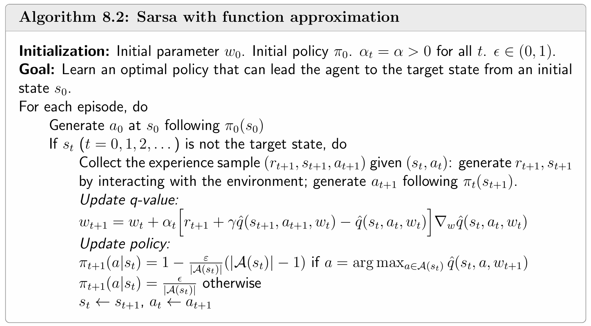
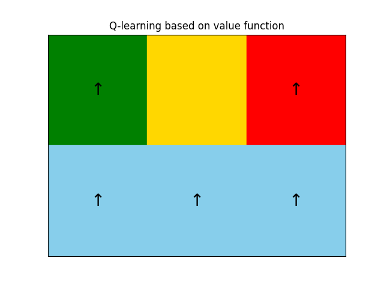
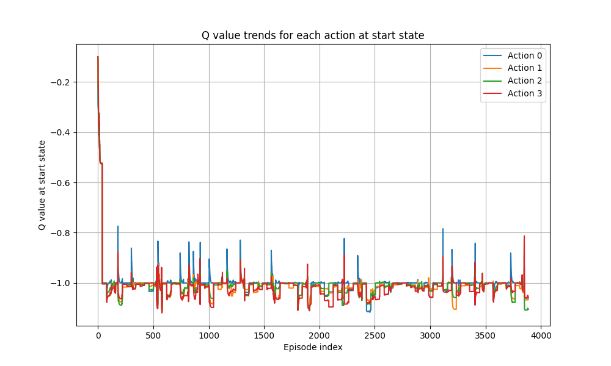

Value Function Methods
📜 引言
该章节记录了笔者学习 Value Function Methods of Q-learning 时的笔记。
| 创建人 | 创建时间 | 最后一次修改时间 |
| IamMI | 2025.7.26 | 2025.7.26 |
Q-learning 是一种直接学习 ，再根据 来得到最优策略的算法。
但是在现实场景中，我们往往具有 ，需要估计其 或 。此时我们可以使用 tabular TD 算法进行迭代估计
具体的收敛性证明见 参考文献 1 - 7.1
但是这类方法是基于表格的，并不适合在高维或连续状态空间内实现，为此，我们引入了函数近似，将 使用某种先验函数进行近似。
🧩 Easy Function
我们可以使用线性函数进行近似
其中 可以有多种表达式，比如 。如此一来，我们就将 tabular TD 算法拓展到了高维、连续状态空间中。
已知策略 ，希望构建一个近似值函数 。我们设置目标函数为
我们采用梯度下降法
由于 未知，我们有两种方案来进行代替
- MC近似
- TD近似
下面仅分析 这种线性情况，当使用 TD 近似时，有
我们可以证明（详细证明见 参考文献 1 - 8.2.5 ）
由于我们并不能直接获取期望值，但是可以使用SGD的思路（更多关于SGD的内容请见 参考文献 1- 6.4 ），对一个Batch进行优化。最终可以优化到
可是这个 并不是我们 的最优值，仅仅只是一个近似解，但是它有特性
具体证明见 参考文献 1 - Box 8.6 。从中可以看出 其实已经是一个不错的近似解了。
我们使用梯度下降法还有一个好处，就是仅需要采样轨迹 即可
TD algorithm based on function approximation
我们可以将 function approximation 的想法应用到 Sarsa 和 Q-learning 算法上，有


代码示例
我们还是使用走迷宫的案例，将 tabular Q-learning 修改成 value function，其他参数不变
def phi(state, action_index):
x, y = state
feature = np.zeros(7)
feature[0] = x
feature[1] = y
feature[2 + action_index] = 1 # 动作 one-hot
feature[-1] = 1 # bias
return feature
theta = np.zeros(len(phi([0,0],0)))
def Q_value(state, action_index):
return np.dot(phi(state, action_index), theta)这是一个最简单的线性函数。在面对极其简单的迷宫时，依旧无法找到出路

遇到该情况时，我们可以检查起点处的 Q value，看看动作直接是否出现了差异

可以看到，照理应该是 Action 1 （下）具有比较大的 Q value，可是在我们设置的线性函数中，所有的动作都没有明显的区别，从中反映出 设置的Q函数表达能力太差，需要替换表达能力更强的函数。
至于替换成何种形式的函数，笔者就不过多尝试了。
🧩 DQN 算法
由于线性函数的表达性能太差，我们可以使用神经网络来代替 。DQN算法是当前最常用的一种架构。
算法概述

可以发现，DQN加入了两个重要的元件： target net 和 replaybuffer，它们的加入很大程度都是为了 稳定模型训练，防止训练发散.
为什么 DQN 需要 Replay Buffer？
Replay Buffer（经验回放）在 DQN 中有以下作用：
- 打破时间相关性
连续状态之间高度相关，直接训练会导致梯度震荡。Replay Buffer 通过随机采样使训练更接近 i.i.d 分布。
- 提升数据利用率
经验可多次使用，特别适用于数据收集成本高的任务。
- 训练更稳定
缓解因估值目标频繁变化带来的不稳定，提高收敛性。
- 支持小批量训练
可采样 mini-batch，充分利用 GPU 进行高效训练。
为什么 DQN 需要 Target 网络？
Target 网络用于稳定目标 Q 值估计，避免训练过程发散：
- 防止目标值不稳定
标准 Q-learning 使用当前网络生成训练目标，容易造成目标不断变动。
- 引入固定目标
使用独立的 Target 网络计算目标值，固定一段时间不变，提高训练稳定性。
- 操作简单有效
每隔一段时间，将主网络参数复制到 Target 网络中
代码示例
采用 参考文献 3 的代码，运行得到：
可以观察到，模型可以收敛到最优解。
实际操作时，在前几个epoch时，模型就已经找到了最优路线，但其 steps 并未收敛，同时在后续探索中还是会尝试中间路线。由于计算资源限制，请笔者自行试验，可以观察 train/ 路径下的图片来判断模型是否收敛。
📋 参考文献
- 强化学习的数学原理 - 赵世钰https://github.com/MathFoundationRL/Book-Mathematical-Foundation-of-Reinforcement-Learning
- DQN 为什么需要 target 网络？https://www.zhihu.com/question/631002164https://www.zhihu.com/question/631002164
 https://www.cnblogs.com/N3ptune/p/17344258.html
https://www.cnblogs.com/N3ptune/p/17344258.html{kind=link}
{kind=link}
{kind=link}
{kind=link}
{kind=link}